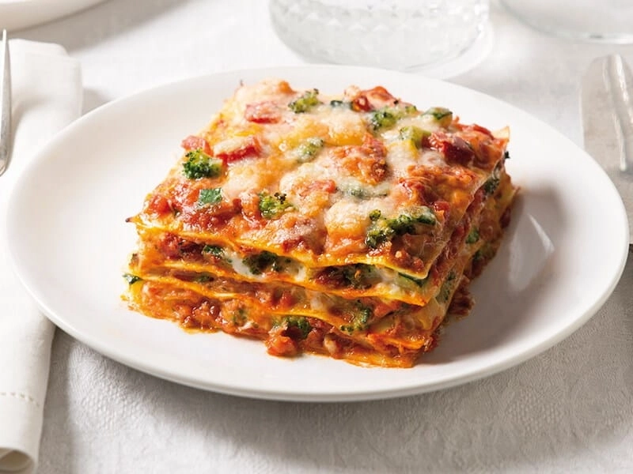

Lazanje s povrcem
Sastojci
300 g listova lazanja
600 g patlidžana
sol
300 g tikvica
300 g svježih rajčica
3 žlice maslinova ulja
2 žličice Vegete Natur
60 g maslaca
60 g Glatkog brašna
oko 1,2 l mlijeka
sol
1 žličica soli
1 žličice papra
muškatni oraščić
50 g naribanog parmezana
Priprema
Lazanje
- Patlidžane operite, narežite na uzdužne ploške srednje debljine, malo posolite i ostavite stajati oko 15 minuta. Zatim ih osušite na upijajućem papiru.
- Tikvice i rajčice također narežite na ploške. U tavi na malo ulja popecite patlidžane i tikvice pa ih ohladite.
- Za bešamel na maslacu kratko popecite brašno i postupno dolijevajte mlijeko uz stalno miješanje. Posolite, popaprite, dodajte malo naribanog muškatnog oraščića i kuhajte na laganoj vatri nekoliko minuta. Na kraju umiješajte parmezan.
- Na dno vatrostalne posude tavite malo bešamela. Po bešamelu na dno vatrostalne posude stavite malo bešamela. Po bešamelu rasporedite dio listova lazanja te dio pripremljenih patlidžana i tikvica pa ih malo pospite Vegetom. Po njima rasporedite mozzarellu narezanu na ploške, a zatim prelijte s malo bešamela
- Drugi sloj započnite lazanjama, po njima rasporedite popečene patlidžane i tikvice te narezane rajčice. Pospite Vegetom Natur i stavite ploške mozzarelle. I ovaj sloj prelijte s malo bešamela.
- Treći red započnite opet lazanjama, a zatim stavite na njih preostale patlidžane s tikvicama i narezanu mozzarellu. Završite lazanjama i bešamelom. Pecite u pećnici zagrijanoj na 200°C oko 30 minuta.
Stranica s koje sam dobila inspiraciju
lazanje
Savjeti
Ovako to treba izgledati na kraju
